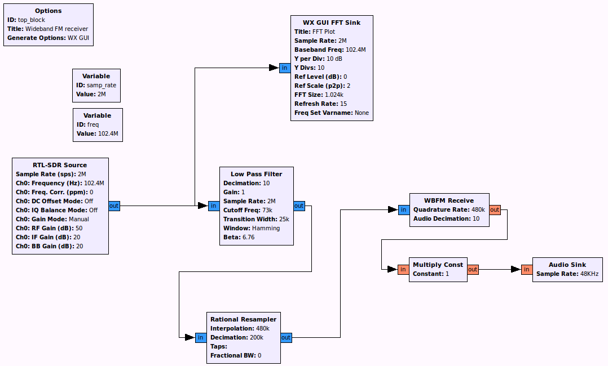
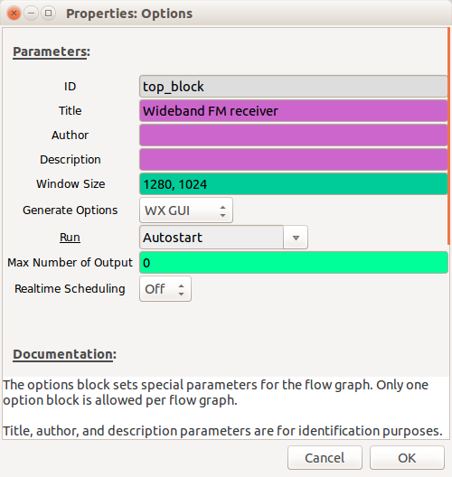
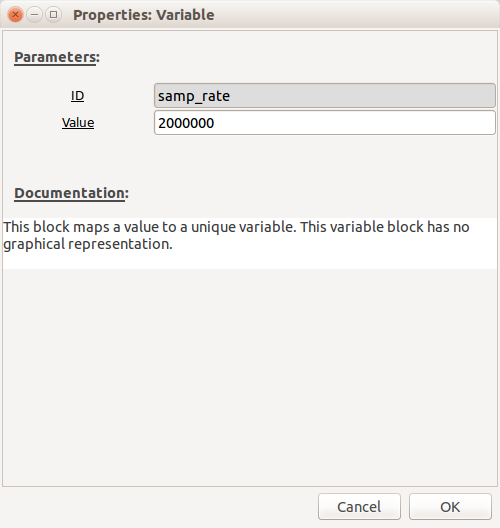
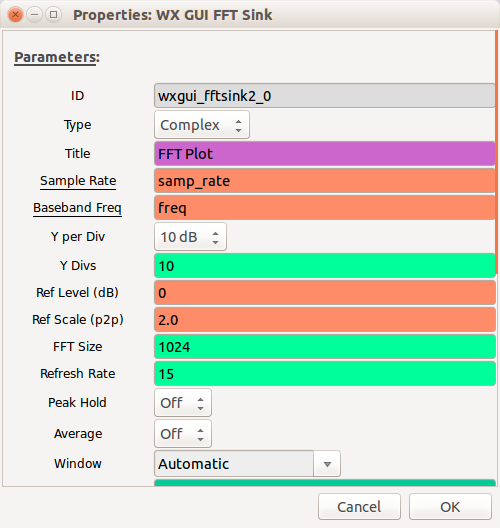
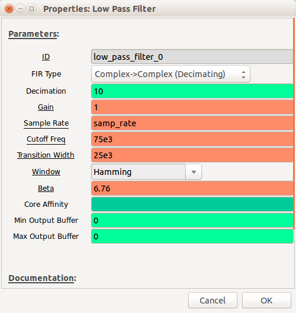
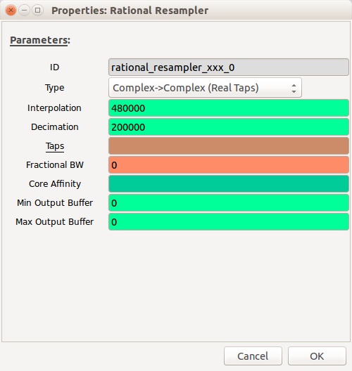
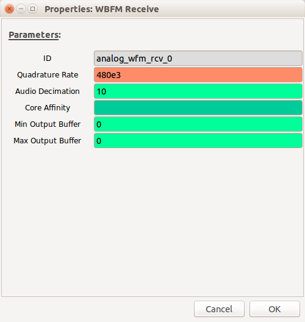
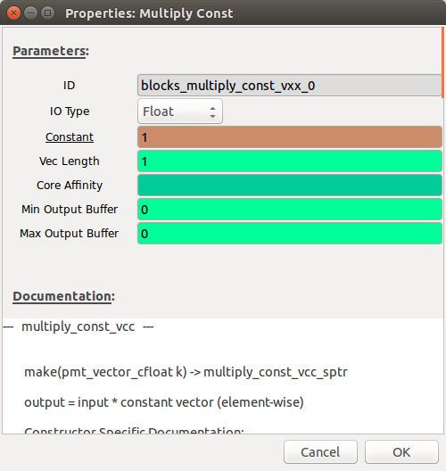
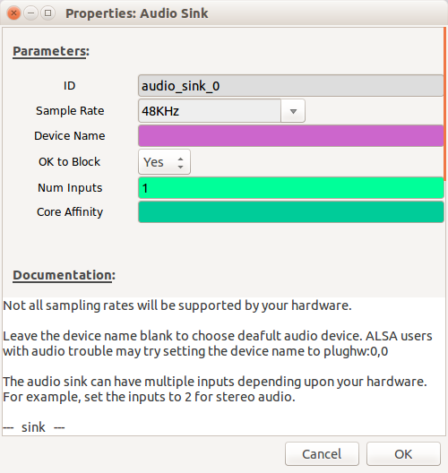

Developing_a_simple_FM_receiver_step-by-step
The instructions below will enable you to create a simple FM radio receiver. When you have finished it should look like this:

Configure the GNU Radio environment
When you first start GNU Radio Companion, you are presented with an "Options" block and a "Variable" block.
Hint: When using GNU Radio Companion if you cannot find the block you are looking for in the right-hand pane, click on the magnifying glass in the menu bar and this will enable you to do a text search
The "Options" block allows you to enter parameters such as the Title, Author, Description and also allows you to decide if the GUI elements will use the WX or QT environments (WX is the default).

In the "Variable" block set the sample rate to be 2e6 (2,000,000)

Configure_the_receiver
Depending on which SDR you have will depend on which options you set here. All of the main receivers can be controlled using the "osmocom Source". The "Device Arguments" settings for different SDRs can be found here. However, if you are using an RTL-SDR, you can also just use the "RTL-SDR Source".

The sample rate will already be pre-populated with the "samp_rate" variable. Set "Ch0: Frequency" to be "freq" and then create a new variable called "freq" (you can copy and paste the other "Variable" block and then rename it) with a frequency in the Broadcast FM band e.g. Radio 4 in Cheltenham is 93.4MHz (93.4e6 in exponential notation)

Although you may need to increase the gains at a later stage if the signal is too weak, initially, use the following settings (for RTL-SDR):
- Ch0: RF Gain - 50dB
- Ch0: IF Gain - 20dB
- Ch0: BB Gain - 20dB
Leave everything else at the defaults.
Select a "WX GUI FFT Sink" and connect it to the output of the receiver by clicking on the receiver output and then clicking on the "WX GUI FFT Sink" input - an arrow will link them together (if you want to unlink two blocks, click on the link and drag - it will disappear).

Note: By default the inputs and outputs are blue on these blocks, this denotes the type (blue = complex data, orange = float etc.) If the colours do not match on the connecters you are trying to connect together you will get a type-mismatch error and the arrow will go red.
Filtering
We now want to focus in on the signal of interest and filter out any other signals present in the baseband. Add a "Low Pass Filter" block and connect it to the output of the "SDR Source"
- Set "FIR Type" to be "Complex->Complex (Decimating)"
- Set "Decimation" to be 10 (we don't need to be processing quite so many samples per second so we reduce by a factor of 10)
- Set "Cutoff Freq" to 75e3 - this is the maximum frequency (of the modulated signal) that we want to display
- Set "Transition Width" to 25e3 - this is the bandwidth over which the filter will act i.e. the smaller the number the more aggressive the filter.

Resampling
We now need to resample the signal by a non-integer factor (as we're aiming for the final sample rate at the speaker to be 48KHz).
Add a "Rational Resampler" block and configure the settings as follows:
- "Interpolation": 480000 - this will be the output sample rate
- "Decimation": 200000 - this is the input sample rate

Demodulating
The demodulation scheme used is Wideband Frequency Modulation (WBFM), so add a "WBFM Receive" block with the following settings:
- "Quadrature Rate": 480e3 (the sample rate at the output of the resampler)
- "Audio Decimation": 10 (this reduces the sample rate further to 48KHz)

Amplify the audio signal
We should now have a demodulated audio signal, but it will need to be amplified.
Add a "Multiply Const" block and set "Constant" initially to be "1" (this can be increased to increase the volume)

Audio output
In order to be able to listen to the audio we need an output. Add an "Audio Sink" block and set the "Sample Rate" to 48KHz

Your flow-graph should now be complete! (check it against the picture at the beginning of this tutorial).